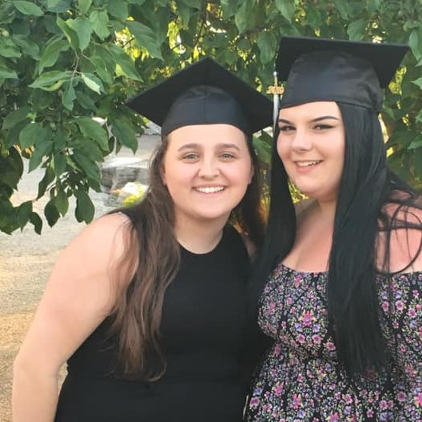
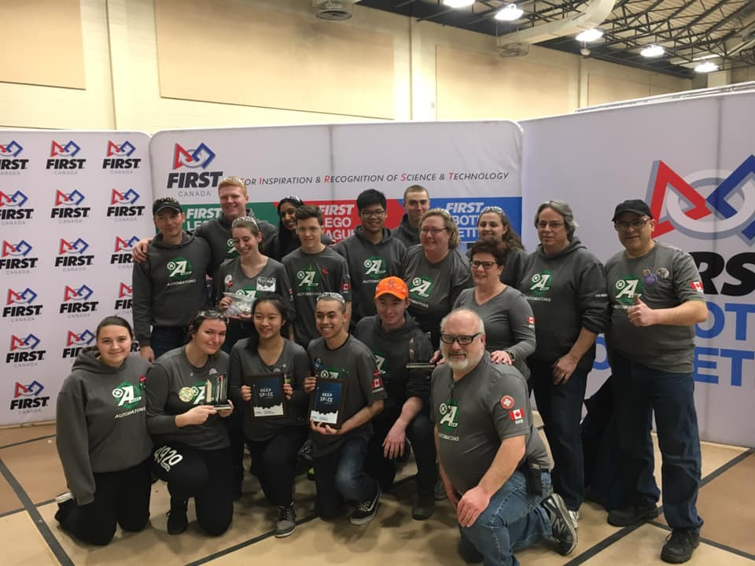

Growing up I had two passions, technology and reading! The first website I coded at 10 years old showed off my favourite books, I wish I kept it to show it off! Currently, I use my two passions to help me advance my career as a software developer.
High School
This is where I discovered my passion for programming. In 10th grade, I knew I needed to figure out what courses I need to take to get the required prerequisites to choose my university program. My older sister encouraged me to take a programming class. Besides simple HTML and CSS, in that class I learned Python. I created simple shapes using math and Pygame, and a simple drawing software. This class allowed me to discover my passion for programming, and the next semester I took a computer engineering class, where I learned about the hardware of computers, and even experimented with an Arduino and built a simple self driving car.
Robotics
After that, I joined my school’s robotics team, and learned LabView to program the robot, and signed up for the programming and computer engineering classes for the following year. I finally found my passion that I wanted to pursue in post-secondary. I set my sights high, to the top university in the country for computer science and was rejected. It broke my heart, but I did not let it stop me from following my dreams.
Now
I am in my fourth year of Computer Science at the University of Windsor, specializing in Software Engineering. I could not be prouder of my program and my accomplishments this far. Currently, I work under Dr. Christie Ezeife as a research database programmer, working with HTML, CSS, PHP, and SQL, and I am incredibly excited about the opportunity to continue working with her this summer.
If you like my work, or like me, I would love to get into contact with you!